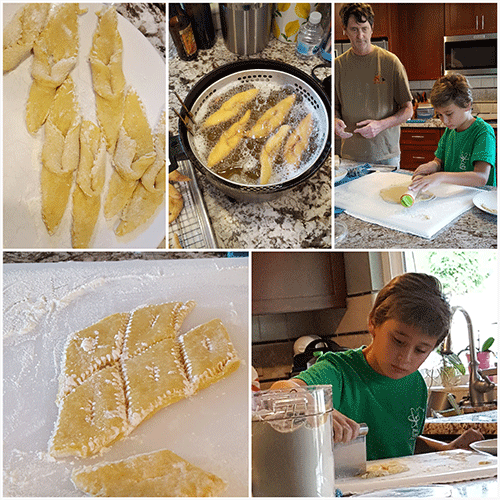

The Kitchen
The recipes on this website are family favorites. We are a family of 3, always looking for healthy options, quick dinners, and new desserts. In all of my cooking I've found that there is always some amount of decoding to do, whether it's trying to make something healthier (or just leaving a great dish alone), or unlocking the history of a dish that's been in the family for generations, or testing out a new ingredient or style of cooking. We are always up for the challenge and adventure that is found in the kitchen.